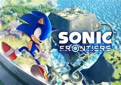

cyberspace can help you with collecting choas emarmls keys, in order to get on cyberspace is to collect gears and in order to get gear is defeat titans.
the story is preety sad so if you start crying it's normal. all though the villan is not eggman besides he is bassicly in the good guy team the villan is a girl named SAGE which is accshly eggman daughther and if you do not belive me just finsh the game.
the music on the game is really really sad just like the ending but when sonic turns into supersonic the music turn normal just rember not all music should be happy
boss battles are really easy because you are supersonic sometimes your are in space so you have to be supersonic before you start being supersonic you will have to battle it in modern sonic so its bassicly a introduction with the boss battle here is all the bosses by order
Giganto (kronos island boss)
Wyvern(ares island boss)
Knight(choas lsland boss)
Supreme(ouranos lsland boss)
the end(in space)
the nintendo controlers are easy. you click y to use the homing actack. b to jump. a to slided or slam x to use the cyclope acttak r+l to parry or defend zr to boost. i'm not explaning every little thing+i don,t know all the concrols
thank you and enjoy your game
